В предстоящих релизах нас ждут захватывающие дух истории любви, детективы, комедии, ужасы и т.д. Так же в этом году планируется выпуск экранизации таких популярных манхв и манг как: "Неудержимая юность", "Я знаю, но...", "Имитация" и т.д. Актеры, режисеры и остальной стаф проделали колоссальную работу для того чтобы порадывать своих зрителей и поклонников, каждый из них принес большой вклад в создании дорам и продвижении данных азиатских телесериалов, которые радуют наш глаз.
Среди ожидаемых релизов на 2024 год можно отметить продолжение популярных сериалов, таких как «Госпожа Мэй», «Игра в любовь», «Сиявшая семейка» и «Любовь после соушена». Кроме того, в этом году мы также увидим новые дорамы, которые уже сейчас вызывают огромный интерес у зрителей.
Календарь релизов на зиму 2024
1. "Милый дом 2"
Дата выхода:"18 декабря 2023 года"
Количество серий: 10
Жанр: мистика, триллер, Ужасы
В ролях: Сон Кан, Ли Джин Ук, Ли Си Ён, Го Мин Си, Ю О Сон, О Чжон Се, Ким Му Ёль, Чон Джин Ён, Пак Гю Ён
Во втором сезоне долгожданной корейской дорамы «Милый дом» мы возвращаемся к событиям, произошедшим в конце первого сезона, когда жители Green Home наконец-то спаслись от монстров в своем многоквартирном комплексе.
Однако разношерстная компания выживших столкнулась с новым противником, поскольку немногие оставшиеся очаги цивилизации оказались под жестким военным контролем. Тем временем главный герой Ча Хён Су оказывается в плену и пытается понять, как его способности могут помочь спасти человечество в условиях разрушающегося мира.
2. "Мой парень – купидон"
Дата выхода:"1 декабря 2023 года"
Количество серий: 16
Жанр: комедия, фэнтези, романтика
В ролях: Чан Дон Юн, Нана, Пак Ки Ун
События новой корейской дорамы «Мой парень – Купидон» разворачиваются вокруг невезучей ветеринарши О Бэк Рён, которую играет Нана из дорамы «Девушка в маске». Умные и красивые мужчины, с которыми встречается героиня, постоянно подвергаются смертельному риску, заставляя их в ужасе бежать.
Чан Дон Юн играет Чон Сан Хёка, харизматичного купидона, отчаянно пытающегося вернуть себе крылья, утраченные им в результате трагического инцидента почти полтысячелетия назад. Однако в своей новой жизни он неожиданно влюбляется в О Бэк Рён.
3. "Добро пожаловать в Самдали"
Дата выхода:"2 декабря 2023 года"
Количество серий: 16
Жанр: драма, романтика
В ролях: Чжи Чан Ук, Шин Хе Сон, Син Дон Ми, Кан Ми На
События дорамы «Добро пожаловать в Самдали» разворачиваются на острове Чеджу, где происходит встреча друзей детства Чо Ён Пиля и Чо Сам Даль. После того как в юности между ними произошел неприятный эпизод, Ён Пиль остается в родном городе и становится увлеченным, но упрямым синоптиком, а Сам Даль уезжает в Сеул, чтобы осуществить свою мечту — стать модным фотографом.
Спустя годы жизнь Сам Даль в городе терпит крушение, и она возвращается в родной город. Здесь она вновь встречается с Ён Пилем, и между ними вновь возникает дружба, которая постепенно перерастает в романтические отношения.
4. "Наступила ночь"
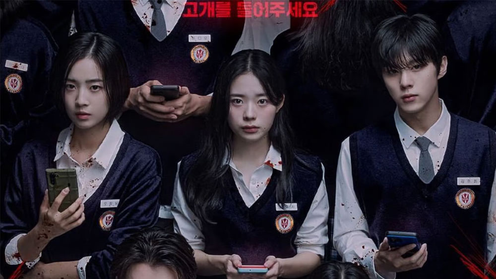
Дата выхода:"4 декабря 2023 года"
Количество серий: 12
Жанр: детектив, ужасы, триллер
В ролях: Ли Чжэ Ин, Ким У Сок, Чхве Ё Бин, Ан Джи Хо, Чон Со Ри, Чхон Ин Со
Представьте себе, что в школе все перевернулось с ног на голову: ученики неожиданно оказываются втянутыми в настоящую игру в мафию. Казалось бы, невинная экскурсия вдруг превращается в поле психологической битвы!
В попытке спастись Ли Юн Со использует свою наблюдательность, в то время как Ким Чжун Хи, президент класса, берет на себя ответственность, опираясь на сильное чувство справедливости. Тем временем О Чжон Вон, ученица, ставшая изгоем, вынуждена искать союзников, чтобы выжить.
5. "Саундтрек № 2"
Дата выхода:"6 декабря 2023 года"
Количество серий: 4
Жанр: романтика
В ролях: Гым Сэ Рок, Но Сан Хён
Как и «Саундтрек №1» 2022 года, новый сезон сериала Disney+ рассказывает о другой паре, влюбленной в музыку и оказавшейся на перепутье в своих отношениях. Впервые встретившись в студенческой группе, Хён Со и Су Хо провели вместе несколько лет, сблизившись на почве любви к музыке, но под давлением жизненных обстоятельств оказались разлучены.
Спустя годы Су Хо становится успешным генеральным директором, но чувствует себя перегоревшим и уставшим от жизни. Тем временем Хён Со отказалась от своей мечты стать певицей и теперь работает преподавателем фортепиано. Разочарованные в жизни, они вновь встречаются и заново открывают для себя дни своей юности с помощью музыки.
6. "Маэстра"
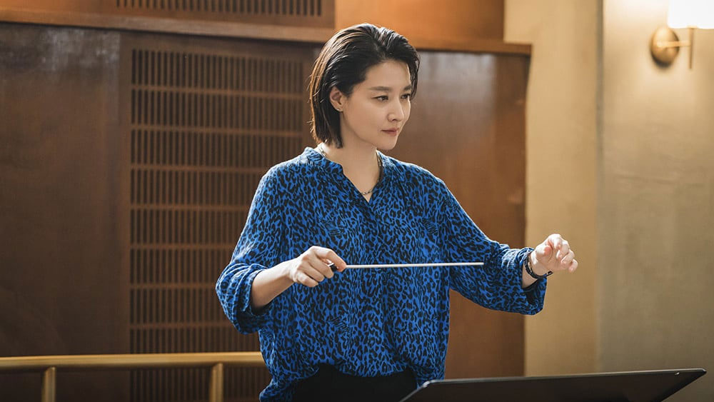
Дата выхода:"9 декабря 2023 года"
Количество серий: 12
Жанр: драма, мистика, триллер
В ролях: Ли Ён Э, Ли Му Сэн, Хван Бо Рым Бёль, Ким Ён Джэ, Пак Хо Сан
Эта мистическая дорама, основанная на французском сериале «Филармония» 2019 года, рассказывает о Чха Се Ым, талантливой скрипачке и одной из немногих женщин-дирижеров в мире. Ее успех становится причиной разлада в отношениях с мужем, который чувствует свою неполноценность по сравнению с ней.
Не подозревая об этом, Се Ым скрывает темную тайну. Расследуя странные инциденты, происходящие в ее оркестре, она постепенно приходит к выводу, что эти странные события могут быть связаны с ее секретом.
7. "Игра смерти"
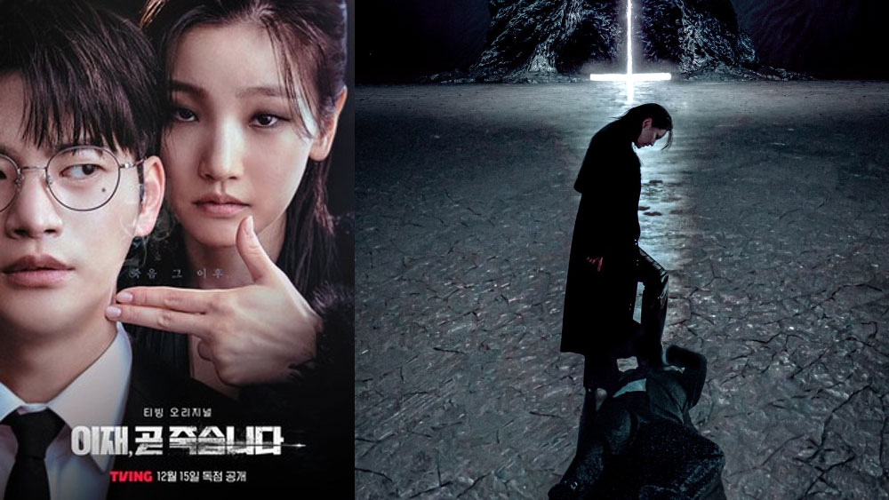
Дата выхода:"15 декабря 2023 года"
Количество серий: 8
Жанр: драма, фэнтези
В ролях: Со Ин Гук, Пак Со Дам, Го Юн Чжон, Ким Джи Хун
Сюжет дорамы «Игра смерти» основан на одноименном вебтуне Naver и рассказывает о молодом человеке по имени Чхве И Джэ, который пытается покончить с жизнью, потеряв свои сбережения в результате мошенничества с биткоинами. Его равнодушие к смерти обижает саму Смерть, и она решает наказать его игрой: И Джэ должен пережить 12 жизней и смертей, прежде чем его отправят в ад.
Однако И Джэ узнает, что сможет прожить полноценную жизнь, если сумеет избежать смерти в любой из 12 жизней. Несмотря на то, что его собственная жизнь закончилась, он начинает задумываться о том, могло ли все сложиться иначе, если бы он жил жизнью других людей.
8. "Песчаный цветок"
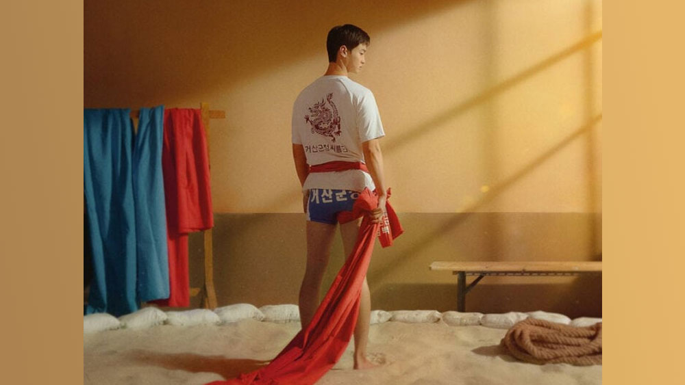
Дата выхода:"15 декабря 2023 года"
Количество серий: 8
Жанр: драма, фэнтези
В ролях: Со Ин Гук, Пак Со Дам, Го Юн Чжон, Ким Джи Хун
Чан Дон Юн играет Ким Пэк Ду, который в свое время считался вундеркиндом в корейской борьбе Ссирым. Однако после того, как его команда была распущена, Ким Пэк Ду решил уйти из спорта.
Но после случайной встречи с подругой детства О Ю Кён, которая становится новым менеджером его команды по Ссирым, он начинает верить, что именно эта встреча может стать поворотным моментом в его спортивной карьере.
9. "Существо Кёнсона"
Дата выхода:"22 декабря 2023 года"
Количество серий: 10
Жанр: историческая, триллер, экшен
В ролях: Пак Со Джун, Хан Со Хи, Ким Су Хён, Ким Хэ Сук, Чо Хан Чхоль, Ви Ха Джун
Весной 1945 года, во время японской оккупации Кёнсона, богатенький чиновник Чан Тхэ Сан и девушка, специализирующаяся на поиске пропавших людей Юн Чхэ Ок сталкиваются со странным и ужасным существом.
Вскоре становится ясно, что это существо, порожденное человеческой жадностью, стоит за недавней чередой исчезновений в городе. Парочка пытается справиться с нависшей угрозой и ввязывается в борьбу с этим существом.
10. "Мой счастливый конец"
Дата выхода:"30 декабря 2023 года"
Количество серий: 16
Жанр: триллер
В ролях: Чан На Ра, Сон Хо Джун, Со И Хён, Ли Ки Тэк, Пак Хо Сан
У Со Чжэ Вон, кажется, есть все. На работе она — self-made woman и генеральный директор уважаемой мебельной компании, пользующейся большой популярностью в социальных сетях. А дома она живет в счастливом браке с добрым и отзывчивым Хо Сун Ёном, от которого у нее есть прекрасная дочь.
Между тем жизнь однокурсницы Чжэ Вон по университету Квон Юн Джин сложилась совсем не так, как она планировала: неудачный брак и нереализованная карьера. После случайной встречи со своей подругой Юн Джин начинает завидовать ее безоблачной жизни…
1. "Выходи замуж за моего супруга"
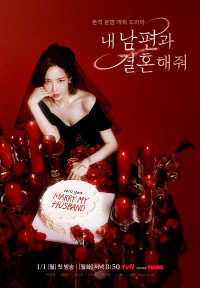
Дата выхода:"1 января 2024 года"
Количество серий: 17
Жанры: комедия, мелодрама, фантастика
В ролях:Ли И Гён, Ли Ки Кван, Н Ин У, пак Мин Ён, Пэ Гы Рин, Сон Ха Юн
Дорама расскажет непростую историю девушки по имени Кан Чжи Вон. Она не очень удачно вышла замуж, а затем заболела раком и узнала, что муж ей изменяет и не собирается ее поддерживать.
В конце концов Кан Чжи Вон пострадала от рук мужа и неожиданно перенеслась в прошлое. Ей выпал уникальный шанс изменить свою жизнь, и она решает им воспользоваться!
2. "Пожалуйста, не волнуйся"
Дата выхода:"5 января 2024 года"
Количество серий: 16
Жанры: драма, комедия, мелодрама, фантастика
В ролях: ???????
Молодая девушка попадает в роман на свадьбу главной героини, в теле которой она оказалась. Но невесту похищает главный злодей, младший брат жениха. Он считает ее шпионкой и намерен предоставить доказательства, хотя по каким-то причинам не может причинить ей вред. Как будет выпутываться девушка из этой непростой ситуации, узнаем после просмотра.
3. "Ночной цветок"
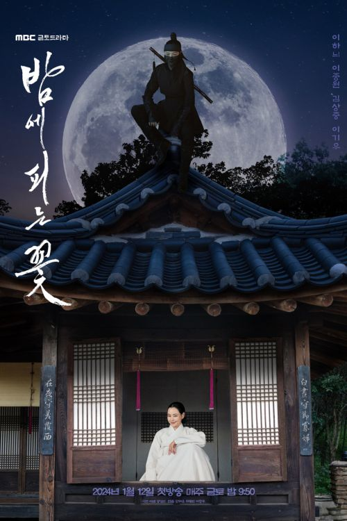
Дата выхода:"12 января 2024 года"
Количество серий: 12
Жанры: романтика, триллер, фантастика
В ролях: Ли Ха Ни, Ли Чон Вон, Ли Ки У
Чо Ё Хва (Ли Ха Ни) вдова вот уже как 15 лет. Ее родственники – самая престижная дворянская семья в этом районе. Днем она тихо живет дома и никогда не выходит на улицу. Но ночью Ё Хва тайно перепрыгивает через стену и заботится о людях, нуждающихся в помощи. Так она однажды знакомится со старшим офицером Пак Су Хо (Ли Чон Вон) и начинает мечтать о своем будущем.
1. "Брендинг в Сонсудоне"
Дата выхода:"5 февраля 2024 года"
Количество серий: 24
Жанры: драма, комедия, мистика
В ролях: Ким Чжи Ын, Пак Соломон, Ян Хе Джи, Ким Хо Ён, Чон И Ран и др.
Романтическая дорама-триллер, действие которой происходит в центральном районе Сеула - Сонсудоне. Сюжет дорамы о молодой руководительнице маркетинговой группы Кан На Ён и стажере Со Ын Хо. Их души меняются телами после неожиданного поцелуя.
Кан На Ён - живая легенда индустрии, прошла путь до руководителя, добиваясь успеха в каждом проекте, жертвуя при этом дружбой и любовью.
Со Ын Хо - стажер, известный своей привлекательностью. Он живет как YOLO (английская аббревиатура фразы "you only live once" - "ты живешь один раз") и на каждом шагу конфликтует со своим боссом, трудоголиком Кан На Ён.
2. "Дневник убийцы"
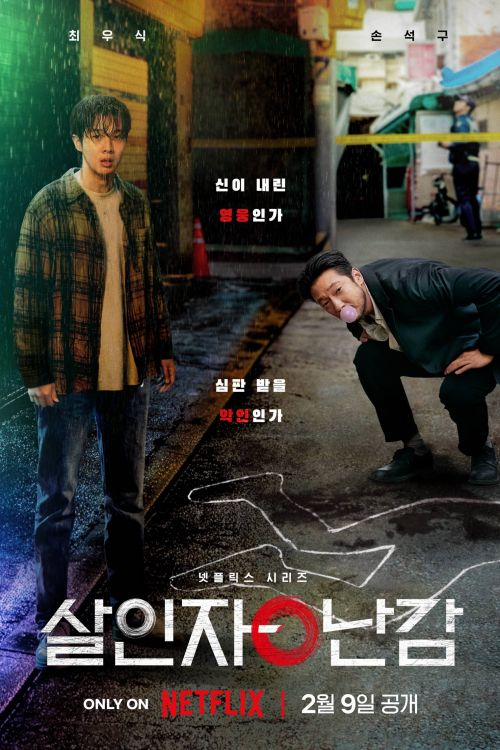
Дата выхода:"9 февраля 2024 года"
Количество серий: 8
Жанры: Детектив, драма, комедия, криминал, триллеры
В ролях: Чхве у Шик, Сон Сок Гу, Ли Хи Чжун, Хён Бон Сик, Ким Ё Хан и др.
Обычный студент Ли Тан подрабатывает по ночам в магазине. Однажды он вступает в ссору с покупателем и, бессознательно размахнувшись молотком, убивает его. Страдая от чувства вины и страха, что его жизнь может быть разрушена, Ли Тан внезапно узнает, что человек, которого он убил, был серийным убийцей, и постепенно осознает, что обладает сверхъестественной способностью распознавать «злые сердца». Он решает стать темным героем, который наказывает людей, совершивших в прошлом злые поступки.
Хладнокровный и харизматичный детектив Чан Нан Гам приступает к расследованию дела об убийстве и начинает настойчиво преследовать Ли Тана.
На основе одноименного вебтуна (сюжет Ggomabi, художник Nomabi).
3. "Свадьба невозможна"
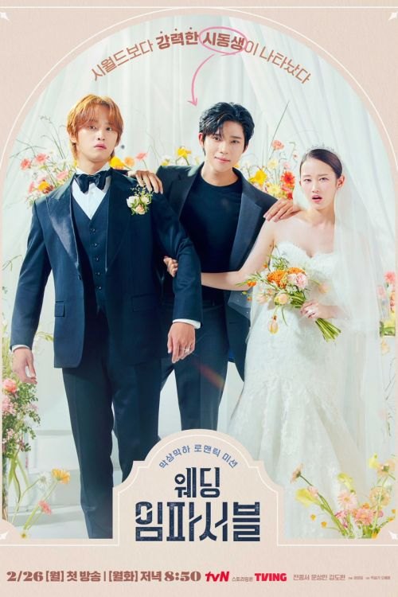
Дата выхода:"26 февраля 2024 года"
Количество серий: 12
Жанры: Детектив, драма, комедия, криминал, триллеры
В ролях: Чон Чжон Со, Мун Сан Мин, Ким До Ван, Пэ Юн Гён, Пак Джэ Ван, Кан На Он и др.
На А Чжон работает актрисой второго плана. Она талантлива, но пока не может добиться успеха. Она играла замужних персонажей, но в реальной жизни её личная жизнь складывается не лучшим образом. У неё есть друг Ли До Хан. Он родом из богатой семьи. Родственники настаивают на его женитьбе, но есть нюанс, из-за которого он не может вступить в брак. Чтобы решить вопрос Ли До Хан просит На А Чжон выдать себя за его невесту. Девушка ответственно подходит к исполнению этой "роли", но в их план вмешивается младший брат Ли До Хана Ли Чжи Хан.
Адаптация вебтуна "Wedding Impossible" (웨딩 임파서블) автора Сон Чон Вон (송정원).
4. "Королевский путь"
Дата выхода:"28 февраля 2024 года"
Количество серий: 12
Жанры: Драма, криминал, экшен
В ролях: Ли Джэ Ук, Ли Джу Ён, Хон Су Чжу, Чхве Джин Хо, Ким Хо Джон, Хан Сан Джин и др.
История о борьбе за власть в крупнейшем конгломерате Кореи между представителями "грязной" и "золотой" ложек.
Трое людей стремятся подняться на вершину и занять трон конгломерата: Хан Тэ О (Ли Джэ Ук), хладнокровный, но достойный человек, Кан Ин Ха (Ли Джун Ён), у которого есть и плохая, и хорошая стороны, и молодая женщина На Хе Вон (Хон Су Чжу).
5. "Игра в пирамиду"
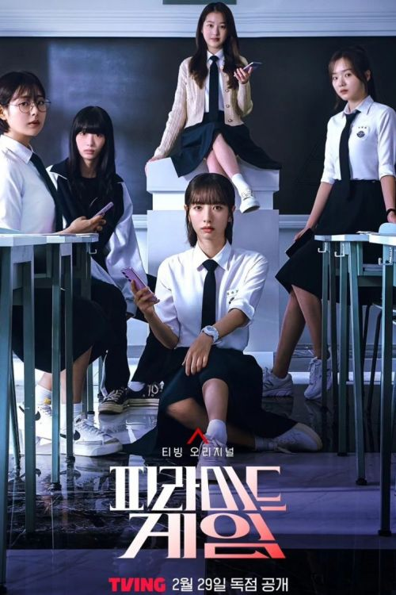
Дата выхода:"29 февраля 2024 года"
Количество серий: 10
Жанры: Драма, мистика, триллер, экшен
В ролях: Ким Чжи Ён, Чан Да А, Рю Да Ин, Кан На Он, Чон Ха Дам, Син Сыль Ги, Ха Юл Ри, Хван Хён Чжон, Ли Чжу Ён и др.
Каждый месяц в частной школе для девочек «Пэкён» в Сеуле проводится голосование популярности, которое превращается в жестокую систему ранжирования, определяющую всю социальную иерархию учебного заведения. Та ученица, что получит оценку F, окажется на самом дне «пирамиды» и станет жертвой школьного насилия.
Сон Су Джи (Бона) – новенькая, которая переводится в старшую школу для девочек «Пэкён» из-за переезда, связанного с работой отца-военного. В своем первом голосовании она получает оценку F и подвергается жестокому буллингу.
Сможет ли переведенная ученица, начав с самого низа, подняться на вершину «пирамиды»? Или она перевернет всю игру?
На основе одноименного вебтуна Dalgonyak.
Календарь релизов на весну 2024
1. "Чудесный мир"
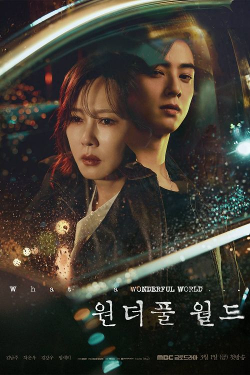
Дата выхода:"1 марта 2024 года"
Количество серий: 14
Жанры: Драма, триллер, детектив
В ролях: Ким Нам Чжу, Ча Ын У, Ким Кан У, Им Сэ Ми, О Ман Сок, Чха Су Ён и др.
История о Ын Су Хён, скорбящей матери, которая стремится добиться справедливости в отношении преступника, которому закон даровал прощение за трагическую смерть ее сына. На пути мести она встречает таинственного студента-медика лет двадцати с небольшим, который готов рискнуть всем, чтобы защитить ее, включая свою собственную жизнь. Вместе они отправляются в опасное путешествие любви и искупления, где ставки высоки, а последствия ужасны.
Ын Су Хён — успешная и известная профессор психологии и писатель, которая впадает в безнадежное отчаяние после потери своего маленького сына.
Квон Сон Юль — человек, который вырос в богатой семье, но в конечном итоге потерял своих родителей из-за ряда событий. Бросив медицинскую школу, Квон Сон Юль ведет тяжелую жизнь, пока неожиданно не встречает Ын Су Хён, и они начинают залечивать раны друг друга.
Хан Ю Ри — генеральный директор бутика, которая является подругой Ын Су Хён, более близкой, чем сестра, и поддерживает ее.
Кан Су Хо — в прошлом репортер крупной телестанции, в настоящее время ведущий мало кому известной станции кабельного вещания. Он искренне любит свою жену Ын Су Хён, но из-за неправильного выбора попадает в неуправляемый вихрь.
2. "Поймать на горячем"
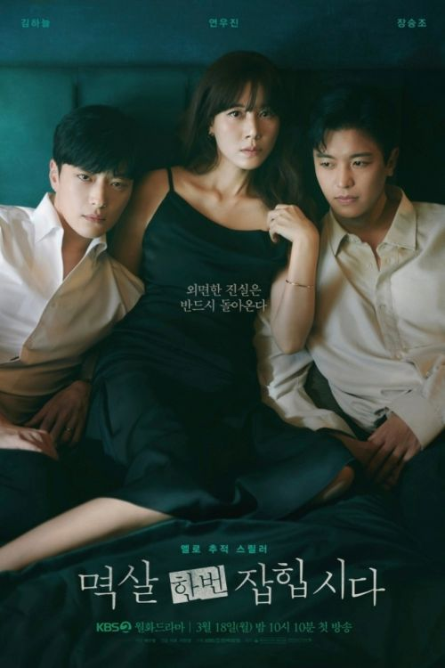
Дата выхода:"18 марта 2024 года"
Количество серий: 16
Жанры: Драма, детектив, мелодрама, триллеры
В ролях: Ким Ха Ныль, Ён У Чжин, Чан Сын Джо, Хан Чжэ А, Юн Чже Мун, Чон Ун Ин и др.
Со Чжон Вон - известный журналист и ведущая программы новостей. Она замужем за популярным писателем Соль У Чжэ. Её жизнь кажется идеальной, но всё меняется, когда женщина узнаёт, что любовницу её мужа убили. Но мало того, что Со Чжон Вон узнаёт об измене, она становится главной подозреваемой в убийстве этой девушки. Союзником Со Чжон Вон в этом деле становится детектив Ким Тэ Хон. Все они пытаются раскрыть это дело.
3. "Королева слёз"
Дата выхода:"9 марта 2024 года"
Количество серий: 16
Жанры: Драма, мелодрама,романтика
В ролях: Ким Су Хён, Ким Чжи Вон, Пак Сон Хун, Квак Дон Ён, На Ён Хи, Ким Чон Нан и др.
Пэк Хён У работает юридическим директором конгломерата Queens Group. Он самый успешный человек из своей родной деревни Йондури, и является её гордостью. Он женат на Хон Хэ Ин, дочери семьи, которая владеет и управляет Queens Group. За Хон Хэ Ин закрепилась слава высокомерной принцессы.
Эта захватывающая история любви супружеской пары, которая преодолевает кризис и остаётся вместе несмотря ни на что.
4. "Ночная фотостудия"
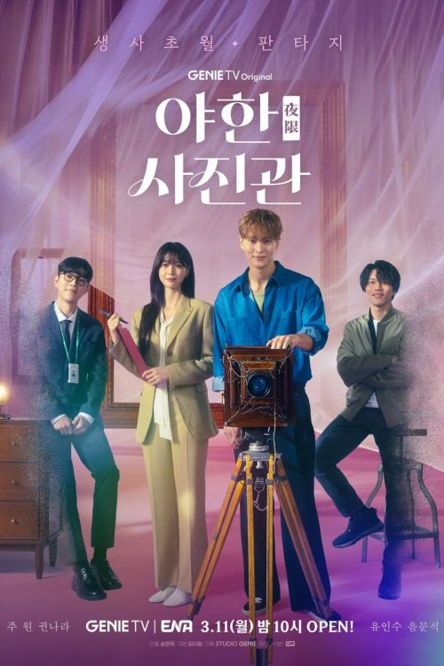
Дата выхода:"11 марта 2024 2024 года"
Количество серий: 16
Жанры: Драма, мистика, романтика
В ролях: Мун Чжун Вон, Квон На Ра, Ю Ин су, Ым Мун Сок, Хан Гру, Ан Чхан Хван и др.
Со Ки Чжу - фотограф в седьмом поколении, связанный семейным контрактом фотографировать призраков в своей студии.
Хан Бом — юрист, которая увлечена своей работой и не терпит несправедливости.
Она защищает Ки Чжу от смерти, и осознает ценность жизни, когда сталкивается одновременно с жизнью и смертью.
5. "Куриный наггетс"
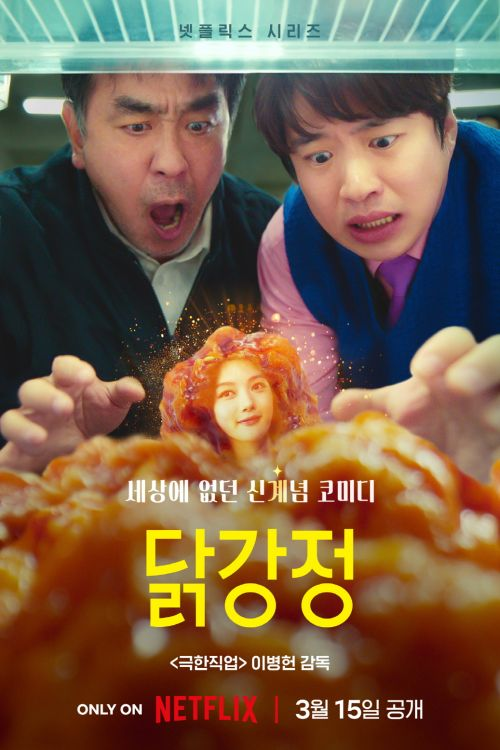
Дата выхода:"15 марта 2024 года"
Количество серий: 10
Жанры: Комедия, фантастика
В ролях: Рю Сын Рён, Ан Джэ Хон, Ким Ю Чжон, Ким Нам Хи, Ян Хён Мин, Чон Хо Ен и др.
Чхве Сон Ман (Рю Сын Рён) управляет небольшой машиностроительной компанией All Machines. Го Пэк Чжун (Ан Джэ Хон) работает там стажером. Он тайно влюблен в дочь босса - Чхве Мин А (Ким Ю Чжон).
Однажды в офис их компании привозят машину. Чхве Сон Ман и Го Пэк Чжун предполагают, что это заказанное ими устройство для снятия усталости, которое должны были доставить завтра.
Тем временем Чхве Мин А заходит в офис своего отца, чтобы передать ему порцию Dakgangjeong (жареная курица со сладкой и острой приправой), видит доставленное устройство и решает опробовать его, чтобы снять усталость. Она забирается в машину, но затем превращается в кусок жареного цыпленка.
Чхве Сон Ман и Го Пэк Чжун пытаются вернуть ей человеческий облик и в процессе раскрывают темные тайны.
На основе одноименного вебтуна Park Ji Dok
6. "Укрытие"
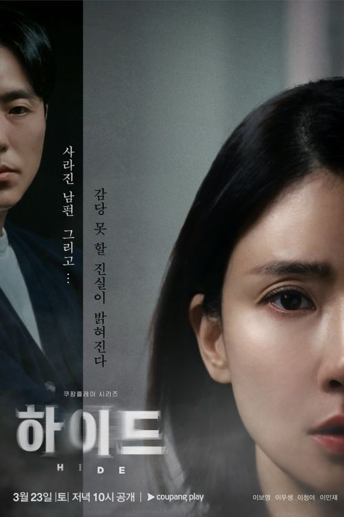
Дата выхода:"23 марта 2024 года"
Количество серий: 12
Жанры: Драма, мистика, триллер, детектив
В ролях: Ли Бо Ён, Ли Му Сэн, Ли Чхон А, Ли Мин Джэ, Ким Сан Хо, Ким Хо Вон и др.
На Мун Ён (Ли Бо Ён) замужем за Ча Сон Джэ (Ли Му Сэн), но он внезапно исчезает. На Мун Ён пытается найти своего мужа и раскрыть тайну его исчезновения.
7. "Красота и преданность"
Дата выхода:"23 марта 2024 года"
Количество серий: 50
Жанры: Романтика, драма
В ролях: Чжи Хён У, Им Су Хян, Го Юн, Ли Иль Хва, Юн Ю Сон, Пак Гын Хён и др.
История об актрисе Пак До Ра (Им Су Хян), жизнь которой внезапно рушится, и продюсере Го Пиль Соне (Чжи Хён У), который помогает ей подняться, потому что любит её.
8. "Сбежавшая семёрка 2"
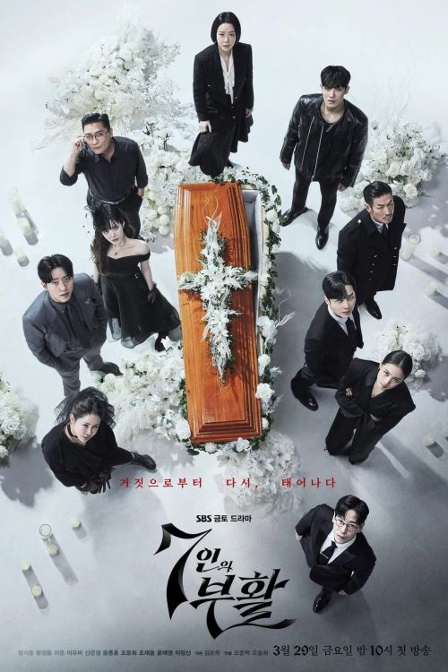
Дата выхода:"29 марта 2024 года"
Количество серий: 10
Жанры: Драма, мистика, триллер, экшен
В ролях: Чхве у Шик, Сон Сок Гу, Ли Хи Чжун, Хён Бон Сик, Ким Ё Хан и др.
На данный момент информация о релизах на Апрель 2024 года отсутствует.
На данный момент информация о релизах на май 2024 года отсутствует.
Календарь релизов на лето 2024
На данный момент информация о релизах на Июнь 2024 года отсутствует.
На данный момент информация о релизах на июль 2024 года отсутствует.
На данный момент информация о релизах на август 2024 года отсутствует.
Календарь релизов на осень 2024
На данный момент информация о релизах на Сентябрь 2024 года отсутствует.
На данный момент информация о релизах на октябрь 2024 года отсутствует.
На данный момент информация о релизах на ноябрь 2024 года отсутствует.